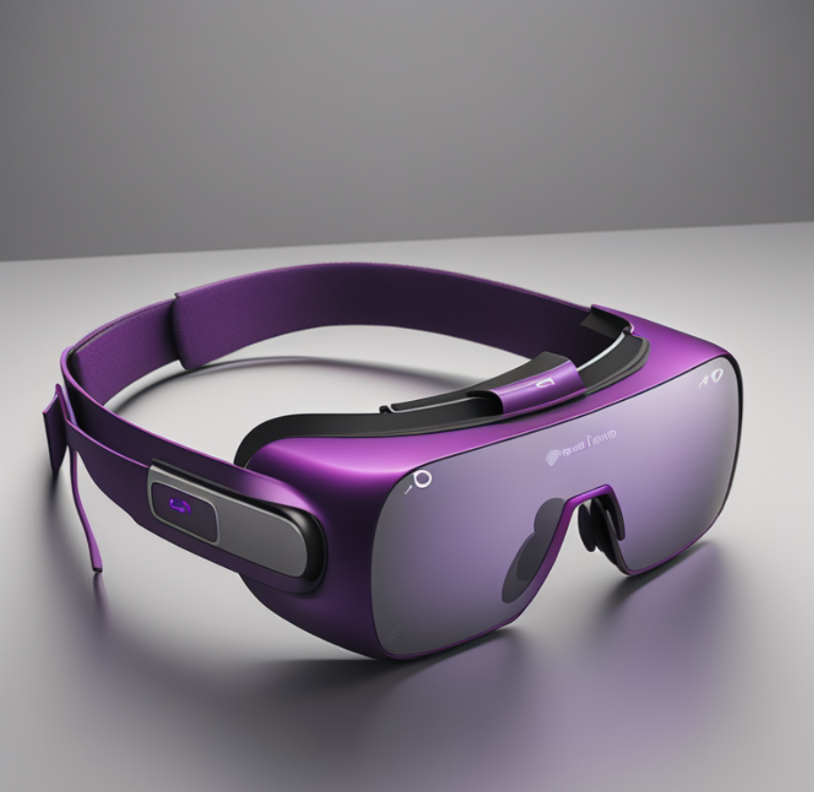

Our Purple Team
At Eupple, we are not just another technology team; we are the pioneers of tomorrow's digital landscape. With a relentless passion for innovation and a commitment to excellence, we craft cutting-edge cell phones and computers that redefine the standards of performance, style, and convenience.
Know UsEuPhone V15 Plus
Where elegance meets innovation in vibrant purple. Experience cutting-edge technology with lightning-fast performance. Elevate your mobile experience with stunning visuals and seamless multitasking. Unlock limitless possibilities with advanced security features and AI capabilities. Stand out with EuPhone V15 Plus and embrace the extraordinary
EuWatch True+
Where elegance meets innovation in captivating purple. Experience cutting-edge technology seamlessly integrated into sleek design. Stay connected and informed with advanced features at your fingertips. Elevate your style with a timepiece that embodies sophistication and functionality. Embrace the future with EuWatch True+ and redefine your wristwear experience.
EuPad Ultra TA
A pinnacle of sophistication in striking purple. Experience unparalleled technology with lightning-fast performance. Immerse yourself in stunning visuals and seamless multitasking. Unlock endless possibilities with advanced features and intuitive design. Embrace innovation with EuPad Ultra TA and redefine your digital experience.
EuBook FTX Pro
Introducing the EuBook FTX Pro: where productivity meets elegance in stunning purple. Experience unparalleled performance with cutting-edge technology seamlessly integrated into sleek design. From lightning-fast processors to immersive displays, unlock new levels of productivity. Embrace innovation and efficiency with advanced features tailored to meet your needs. Elevate your computing experience with EuBook FTX Pro and stay ahead of the curve.
EuVisionPro FutureGo Glass
Step into the future with EuVisionPro FutureGo Glass, where innovation meets immersion in captivating purple. Experience cutting-edge technology as reality blurs with virtual worlds. Dive into a realm of limitless possibilities with stunning visuals and seamless performance. Elevate your reality with advanced features tailored for ultimate immersion. Embrace the extraordinary with EuVisionPro FutureGo Glass and redefine your virtual experience.
FAQ
Are virtual reality glasses compatible with all smartphones, or do they require specific models?
Virtual reality glasses typically require smartphones with specific specifications to ensure compatibility. While some VR glasses support a wide range of devices, others are designed to work with particular models. It's essential to check the compatibility list provided by the VR glasses manufacturer before purchasing.
What factors should I consider when buying a new computer to ensure longevity and performance?
When purchasing a new computer, consider factors such as the processor speed, amount of RAM, storage type (SSD recommended for faster performance), graphics card capability (especially for gaming or design work), and the operating system. Additionally, investing in a quality warranty and regularly updating software and hardware can help maintain performance over time.
Is it worth repairing a damaged cell phone, or should I opt for a replacement?
Whether to repair or replace a damaged cell phone depends on the extent of the damage, the age of the device, and the cost of repairs versus the cost of a new phone. Minor issues like a cracked screen or battery replacement are often worth repairing, while extensive damage or outdated models may warrant a replacement, especially if it affects performance or usability.
Can virtual reality glasses cause any adverse effects on eyesight with prolonged use?
Prolonged use of virtual reality glasses can potentially cause eye strain, discomfort, or motion sickness in some individuals. To minimize these effects, take regular breaks, adjust the settings for optimal comfort, and ensure the glasses fit properly to prevent excessive pressure on the eyes. If you experience persistent discomfort, it's advisable to limit usage and consult with a healthcare professional.